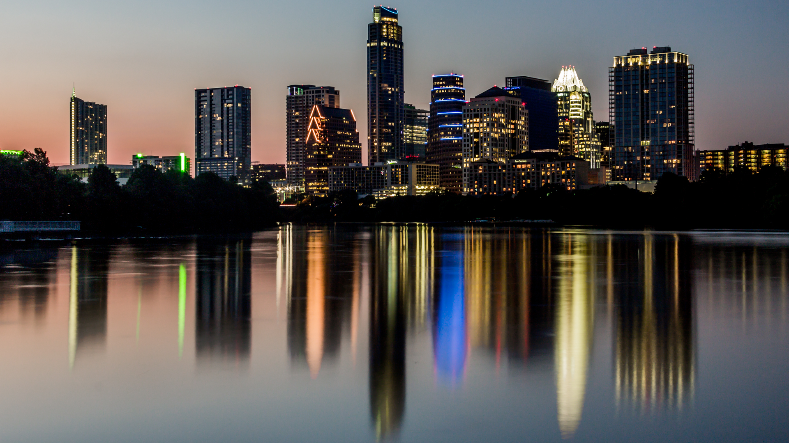
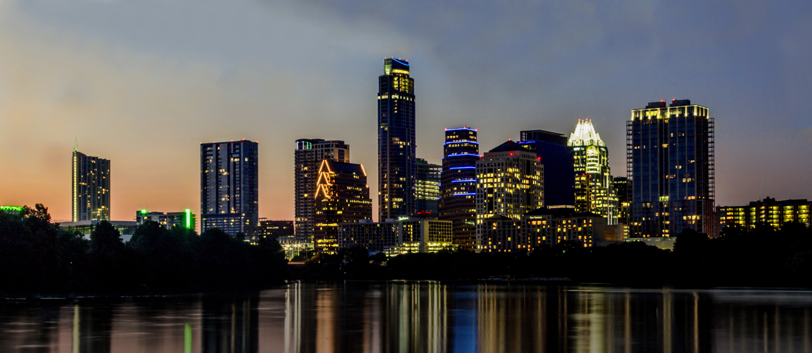

I was searching for an Austin skyline to be used as the header piece for this website, I found one from the Austin,TX wikipedia page, but it just wasn't what I wanted. There wasn't enough sky to add a header for the website and I wanted to make a few other alterations. After finishing extending the sky and croping the river, I removed the boat on the right, I adjusted hue and saturation of the skyline and water seperatly giving a nutral base while excentuating the city lights. I would really like to replace it with an original watercolor work.
Original photo:
Altered final photo:
© 2016 Little Rocket Studio